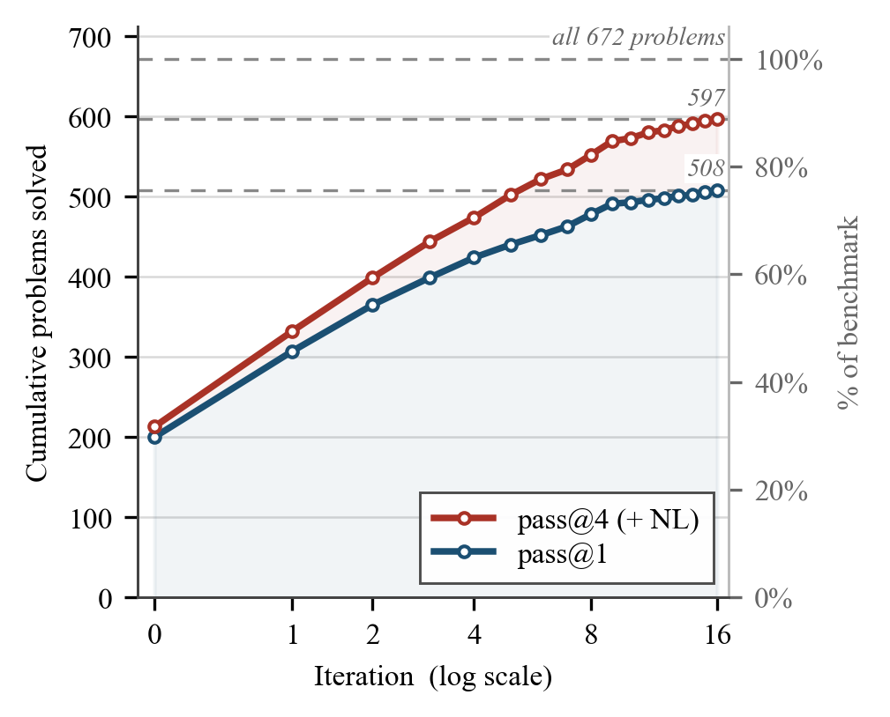
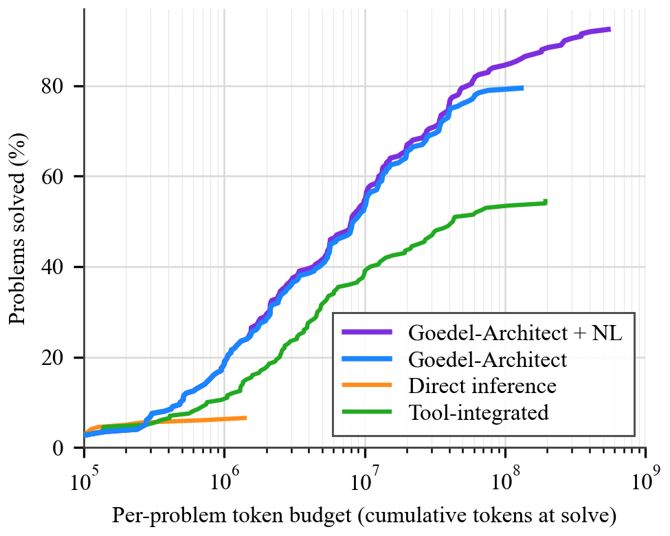

Agentic blueprint-generation framework that proves theorems in Lean 4, evaluated on MiniF2F, PutnamBench, and IMO 2025.
Abstract
We introduce Goedel-Architect, an agentic framework for formal theorem proving in Lean 4 centered on blueprint generation and refinement. A blueprint is a dependency graph of definitions and lemmas that builds up to the main theorem. First, Goedel-Architect generates a blueprint of formally stated definitions and lemmas, along with declared dependencies. This blueprint is optionally guided by a natural language proof. Then, a tool-equipped Lean prover component closes each open lemma node in parallel using relevant dependencies. Failed lemmas in turn drive refinement of the global blueprint. This strategy contrasts with other mainstream approaches which use recursive lemma decomposition, and can inefficiently loop on dead-end strategies. Using the open-weight DeepSeek-V4-Flash (284B-A13B) as the backbone, Goedel-Architect attains 99.2% pass@1 on MiniF2F-test and 75.6% pass@1 on PutnamBench. With an optional natural-language proof seeding the initial blueprint on the harder problems, we additionally close the remaining two MiniF2F-test problems (reaching 100%), lift PutnamBench to 88.8% (597/672), and solve 4/6 on IMO 2025, 11/12 on Putnam 2025, and 3/6 on USAMO 2026. This represents state-of-the-art performance for an open-source pipeline at a price point up to 500x less than comparable open-source pipelines.
Problem
Formal theorem proving in Lean 4 typically uses recursive lemma decomposition, which can loop on dead-end strategies. Proving hard competition-level problems requires structured planning that coordinates multiple lemma dependencies.
Approach
Goedel-Architect generates a blueprint, a dependency graph of formally stated definitions and lemmas building up to the target theorem, optionally guided by a natural-language proof. A tool-equipped Lean prover closes each open node in parallel using declared dependencies. Failed lemmas drive global blueprint refinement through diagnosis (statement_wrong or proof_too_hard). The system uses DeepSeek-V4-Flash (284B-A13B) as the backbone and iterates until all nodes are solved.

Figure 2 : Compute scaling on PutnamBench. Cumulative problems solved by Goedel-Architect (left axis; right axis as % of the 672 -problem benchmark) against the number of blueprint-refinement iterations on a log scale, using the open-weight DeepSeek-V4-Flash backbone. The pass@ 1 curve uses only the default pipeline; the pass@ 4 (+ NL) curve is the pass@ 4 NL effort. The initial blueprint (iterati
Results
Achieves 99.2% pass@1 on MiniF2F-test and 75.6% pass@1 on PutnamBench. With natural-language proof seeding, reaches 100% on MiniF2F-test, 88.8% on PutnamBench (597/672), 4/6 on IMO 2025, 11/12 on Putnam 2025, and 3/6 on USAMO 2026. Total cost for PutnamBench is $294, up to 500x cheaper than comparable pipelines.

Figure 3 : Per-problem solve cost on PutnamBench. All three systems share the same DeepSeek-V4-Flash backbone and are evaluated on the same random subset of N{=}200 PutnamBench problems — those attempted by all three systems. For each problem we record the cumulative tokens (input + output) spent on it at the moment it was first verifiably solved, and plot the fraction of the 200 problems solved w